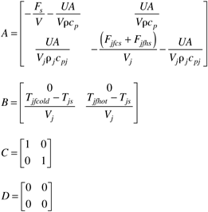

Consider Example 12.1, where input 1 is the cold glycol make-up flow rate, and input 2 is the hot glycol make-up flow rate. The steady-state temperature is 20°C, which is also the vessel feed temperature. At steady-state the cold and hot glycol make-up flow rates are 0. The parameter values are
fov = 1/30; % minutes^-1
ua = 24 ; % kcal/min deg C
vrhocp = 850 ; % kcal/deg C
vrhocpj = 250 ; % kcal/deg C
Tjfcold = -20 ; % deg C
Tjfhot = 100 ; % deg C
Tjs = 20 ; % deg C
vj = 250 ; % liters
and the state space model matrices are

Solve for the numerical values of all matrices. Design a jacket temperature controller and implement the SIMULINK diagram shown in Figure 12-7. Discuss your jacket temperature controller design and tuning procedure. Notice that the jacket temperature output has a range of 100%, constrained between –50% and +50%. The cold valve is fully open at –50% and fully closed at 0%. The hot valve is fully closed at 0% and fully open at +50%, |